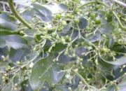

42.雞矢藤、牛皮凍、紅骨蛇茜草科
葉對生單葉有柄。葉片變異頗大，長4~1cm分，寬1~7cm，有卵形、長橢圓形、披針、也有線狀披針形或劍形等狀。先端漸尖，基部渾圓，全緣紙質，常綠。銳尖頭，圓基截基乃至淺心基或楔基，羽狀側脈 5~6對，葉柄長1~5cm。托葉呈三角形，早落性。花白色腋生，內側為粉紅色或深紫色圓錐.圓錐狀聚繖花序，花序頂生或者腋生莖端，雌雄同株，四季常開。花冠管狀鈴形，具有腺毛，先端5裂，不等長；雄蕊 5枚，深藏在花冠筒內，花筒長約0.7~1cm，柱頭兩歧，子房2室.花萼宿存。莖多分枝，細長，具托葉。球形漿果，大小約0.3至0.5cm，果期9至次年2月，成熟後黃褐色有光澤，內含2粒種子。 |
||
|  | ||